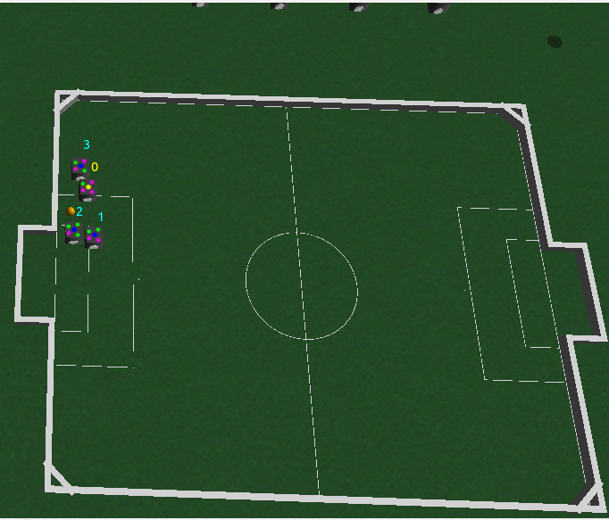
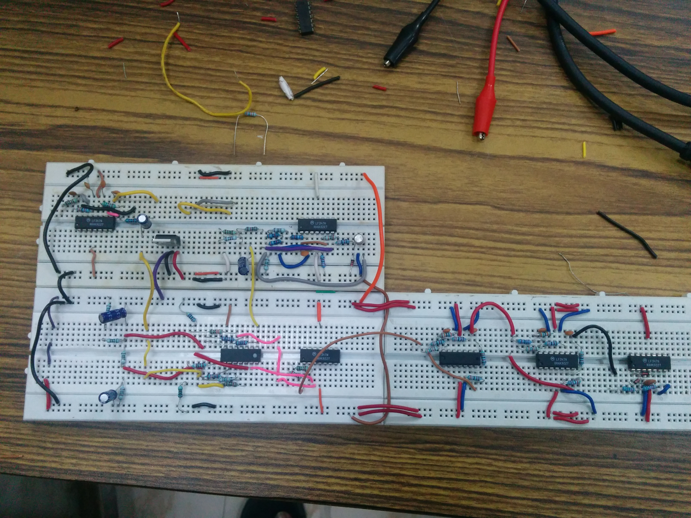

Research Projects

Design of High Threshold Protograph LDPC Codes
IIT Madras, India | Aug 2014-Present | Mentor- Prof. Andrew Thangaraj
The aim of this project was to mathematically characterize the threshold of protograph-LDPC codes, and design heuristics which yield high threshold protograph codes. I worked in collaboration with 2 undergraduate students, and our key contribution was to provide upper bounds on the threshold of protograph codes, by upper bounding the multi-variable optimization problem by a single variable problem. We developed further upper bounds which depend only on the edge-connections. We then used these upper bounds to theoretically design small protograph LDPC codes, which were found to match the best known codes. Based on these rules, we developed a heuristic which searches over the reduced space to find high threshold protograph LDPC codes.Our heuristic improved the best known 3x6 protograph code by over 20%, and produces larger codes close to capacity. Our work was accepted at IEEE IWSDA 2015.
{kind=link}
{kind=link}

Design of Flexible LDPC codes for Energy Scalability
Carnegie Mellon University, PA | May 2014-July 2014 | Mentor- Prof. Pulkit Grover
The aim of this project was characterize the energy-performance trade off for LDPC codes, and design scalable energy codes for Short Distance communication. High performance codes are known to consume more energy, and or short distances, optimizing for energy over distance is the wiser solution. I developed a framework for analyzing the effect of adding a single edge / node to an LDPC code. Based on this, I created scheme that allowed smaller LDPC codes to connect together to form a larger (global) code, which gives better performance at the cost of more energy. (accepted, online version of document will be updated soon){kind=link}
{kind=link}
Distributed File Caching Systems Thesis Project
IIT Madras, India | Jun 2015-Present | Mentor- Prof. Andrew Thangaraj
The aim of this project is to design a distributed content placement and delivery system, making use of ideas from Coded Caching, Network Coding, etc. When a large number of users request files from a server, and have the ability to connect to multiple access points, significant network load reducation can be achieved by coding the files sent to the APs, and smart placement of content. Charectrising this load reduction, and designing these schemes is the focus.Publications
[IWSDA '15] Surajkumar Harikumar, Jayanth Ramesh, Manikandan Srinivasan, Andrew Thangaraj, "Threshold Upper Bounds and Optimized Design of Protograph LDPC Codes for the Binary Erasure Channel", 7th International Workshop on Signal Design and its Applications in Communications (to be presented at IEEE IWSDA '15 in September).Course Projects
Fira Simurosot: A CBR approach for Defensive Strategies
CS6250 - MBR for Artificial Intelligence | IIT Madras, India

For this project, we implemented a defensive Case-Based-Reasoning (CBR) agent for
decision making in a 3-defender 1-attacker robosoccer setup. The CBR
system used intuitive features to decide among several high level actions
to execute. We implemented the CBR system based on our custom similarity measure, and we acquired a dataset of cases by running the game over
multiple rule-based agents. We explored a footprint case representation
for our dataset, and discuss the strengths and drawbacks of this method. [Presentation]
{kind=link}
Performance Evaluation: Puncutred Convolutional Codes
EE5120 - Error Control Coding | IIT Madras, India
We analysed the performance of a rate 2/3 convolutional code of memory order 6, obtained by puncturing a rate 1/2. We used the soft-decision Viterbi algorithm to decode messages transmitted over noisy channels. Used this to find a union bound on code performance, and compute asymptotic and actual coding gain of the rate 2/3 code. [Report]Spectrum Analyzer
EL3203 - Analog Circuits Lab | IIT Madras, India

The goal of this 3-week project was to build a spectrum analyser that was capable of displaying the spectrum of the input signal from 0.5 to 5kHz when connected to a simple oscilloscope in time-mode. The spectrum analyser consisted of a second order low pass filter, a doubly balanced mixer, linear ramp generator, local oscillator with frequency sweeping capabilities, a high-Q band pass filter and an envelope detector, testing many of the concepts learnt over the semester.
{kind=link}